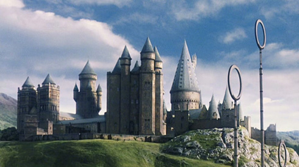

О Хогвартсе
Учебное заведение волшебников из вселенной «Гарри Поттера». Официальное название — Hogwarts School of Witchcraft and Wizardry или, реже, Hogwarts Academy of Witchcraft and Wizardry, в переводах — Шко́ла/Акаде́мия Чароде́йства и Волшебства́ «Хо́гвартс». С языка волшебников название переводится, как «вепрь»..
По словам преподавателя истории магии, Ка́тберта Би́ннса, Хогвартс был основан около тысячи лет назад четырьмя волшебниками: колдунами Годриком Гриффиндором (англ. Godric Gryffindor), Салазаром Слизерином (англ. Salazar Slytherin), волшебницами Кандидой Когтевран (англ. Rowena Ravenclaw) и Пенелопой Пуффендуй (англ. Helga Hufflepuff). Целью основателей было обучение и воспитание детей с магическим потенциалом. Этих детей собирали по всей стране.

Хогвартс, вероятно, является единственной школой магии в Великобритании. Обучение начинается в 11 лет и длится 7 лет. В конце каждого года сдаются экзамены, но особенно важны для будущего учеников экзамены в конце 5-го и 7-го года обучения. Количество учеников Хогвартса точно неизвестно, но скорее всего, туда принимаются абсолютно все дети-волшебники из Великобритании.sУправляют школой директор и заместитель директора. К моменту начала действия директором школы является Альбус Дамблдор, его заместителем — Минерва Макгонагалл. Директор отчитывается перед Советом Попечителей, состоящим из 12 человек.
Обучение в школе бесплатное, но книги и школьный инвентарь учащиеся обычно покупают сами. Однако есть специальный фонд для покупки учебников и школьного инвентаря малоимущим ученикам.
Факультеты
Хогвартс делиться на 4 факультета (houses), каждый назван по фамилии своего основателя:
Гриффиндор
Когтевран
Потайные места в Хогвартс
1.Тайная комната

Тайные ходы
Известно 9 тайных ходов из школы и обратно. Филч знает 4 из них, но куда они ведут, неизвестно. Остальные 5:
Ход за зеркалом на 4-м этаже. Ведёт в Хогсмид. В третьей книге Фред и Джордж Уизли сообщают Гарри, что он обвалился. В книге «Гарри Поттер и Орден Феникса» Сириус говорит, что он достаточно велик для собрания.
Магический ход между двумя Исчезательными шкафами, один в школе, другой в лавке «Горбин и Бэркс» в Лютном переулке. Ход работал, пока Пивз не разгромил шкаф в Хогвартсе в книге «Гарри Поттер и Тайная комната», что впоследствии освободило Гарри от наказания. В книге «Гарри Поттер и Принц-полукровка» Драко Малфой (Горбин рассказывает, как починить шкаф, который находится в Хогвартсе; второй шкаф находится в лавке «Горбин и Бэрк») чинит шкафы. Ход не показан на Карте Мародёров, так как, во-первых, не был известен её создателям, а во-вторых, строго говоря, не имеет отношения к планировке замка, а является особенностью магических шкафов, которые могут в Хогвартсе и не находиться.
Уход за магическими существами
Уход за магическими существами — дисциплина, изучающая волшебных животных, их особенности поведения, кормления и ухода за ними. Входит в список экзаменов на СОВ.
Иногда Хагрид нуждался в замене: то он хотел отказаться от места, когда Рита Скитер раструбила в «Ежедневном пророке», что мать Хагрида — великанша и неделю не показывал носа из своей хижины, то он отправился вместе с мадам Максим по заданию Ордена Феникса искать великанов и не успел вернуться к началу занятий. В этих случаях Дамблдор просил вести уроки профессора Граббли-Дёрг.